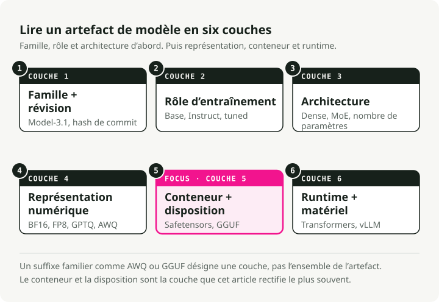
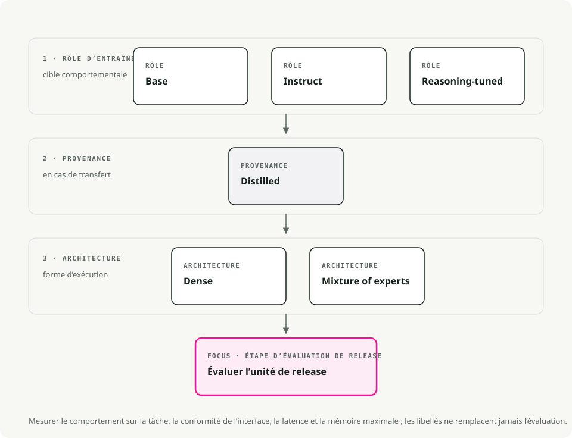
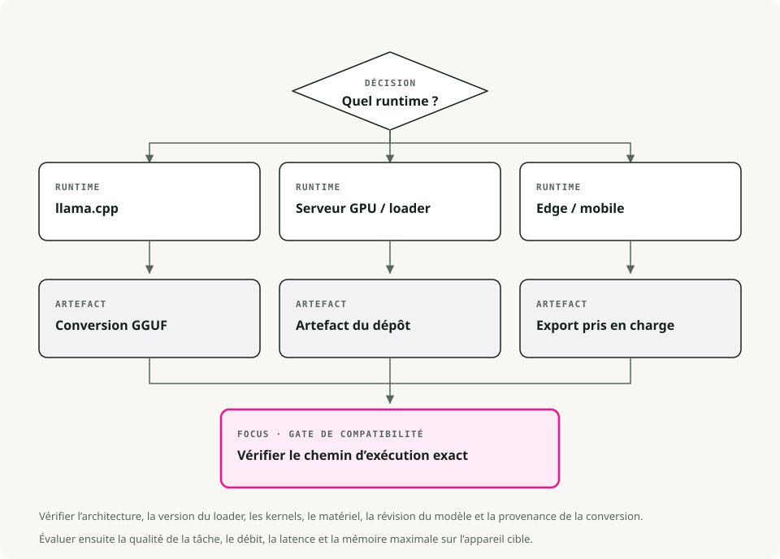
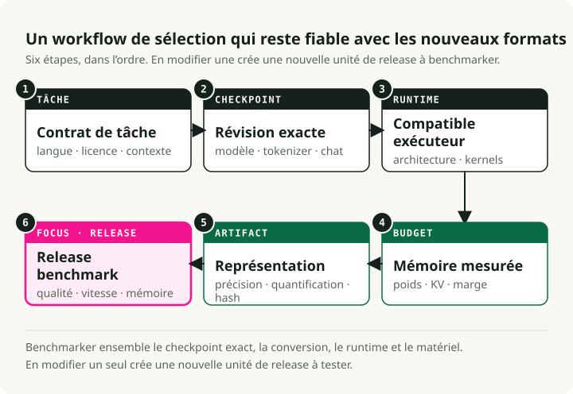

Traduction automatique
Cet article a été traduit automatiquement depuis la version originale en anglais.
Variantes de modèles LLM open source et formats de fichiers : Instruct, GGUF, GPTQ, AWQ et MoE
Pourquoi les modèles LLM open source possèdent-ils autant de noms confus ?
Vous avez probablement déjà vu des noms tels que Llama-3.1-8B-Instruct.Q4_K_M.gguf ou Mistral-7B-v0.3-A3B.awq Et ils se demandaient à quoi servaient ces suffixes. Ils semblent bruyants, mais en réalité ils vous indiquent simultanément deux informations différentes.
Les LLM open source varient selon deux dimensions indépendantes :
- Variante du modèle : le suffixe dans le nom (
-Instruct,-Distill,-A3B) décrit la manière dont le modèle a été entraîné et ce pour quoi il est optimisé. - Format de fichier : l’extension (
.gguf,.gptq,.awq) décrit comment les poids sont stockés et où ils fonctionnent de manière optimale (CPU, GPU, appareils mobiles).
La variante détermine ce que le modèle est capable de faire. Le format détermine où il peut s’exécuter efficacement.

Si vous les mélangez, vous passerez toute une soirée à essayer de résoudre des erreurs CUDA sur un modèle qui, de toute façon, n’était jamais conçu pour fonctionner sur votre carte graphique.
Explication des variantes de modèles (la recette)
La variante indique le type d’entraînement auquel les poids du modèle ont été soumis.
Modèles de base
Il s’agit du modèle pré-entraîné brut. Il a appris les schémas linguistiques à partir de vastes corpus de texte, mais n’a jamais été formé à suivre des instructions ; son unique fonction est de prédire le token suivant.
On l’utilise lorsque l’on prévoit de le fine-tuner sur ses propres données, lorsqu’on mène des recherches et que l’on souhaite disposer d’une base « pure », ou encore lorsque l’on veut spécifiquement un modèle sans entraînement d’alignement.
L’inconvénient est qu’il ne suivra pas de manière fiable les instructions. Si vous lui demandez « Quelle est la capitale de la France ? », il pourrait répondre « Et quelle est la capitale de l’Allemagne ? », car, de son point de vue, vous avez initié une liste de questions.
Modèles Instruct / Chat
Il s’agit d’un modèle de base qui a subi un entraînement supplémentaire (fine-tuning supervisé associé à RLHF), ce qui lui permet de savoir comment suivre les instructions humaines. C’est ce que la plupart des gens cherchent réellement lorsqu’ils disent vouloir un LLM.
C’est le choix idéal pour les chatbots, les agents et les systèmes RAG. Il convient également pour l’appel de fonctions, l’utilisation d’outils et l’aide au codage quotidien. Environ 95 % des cas d’usage en production relèvent de cette catégorie.
Le coût est qu’il est un peu plus volumineux et plus lent que le modèle de base en raison de cet entraînement supplémentaire, et l’alignement peut le rendre moins « créatif », car il a été orienté vers la prévisibilité et l’utilité.
Modèles de raisonnement / CoT
Une nouvelle génération comme DeepSeek-R1 ou les dérivés o1, entraînés grâce à l’apprentissage par renforcement Chain-of-Thought. Ils « réfléchissent » avant de répondre : ils génèrent des tokens de raisonnement interne pour traiter des problèmes complexes en logique, en mathématiques ou en programmation avant de produire la réponse finale.
Ils se distinguent dans les tâches de codage avancé, le débogage, les problèmes mathématiques et les énigmes logiques. Ils ont également tendance à moins halluciner, car ils vérifient leur propre travail.
Le problème réside dans la latence. Ils génèrent un long flux de tokens de « pensée » que vous ne verrez peut-être même pas, mais vous devez néanmoins attendre leur traitement. Ils peuvent aussi être inutilement verbeux pour des requêtes simples.
Modèles distillés
Un modèle « étudiant » plus petit, entraîné pour imiter un modèle « enseignant » plus grand. Le résultat est un savoir compressé : généralement 70-80 % de la qualité originale pour 30-50 % de la taille.
Ils conviennent bien aux appareils mobiles ou aux dispositifs edge, aux solutions SaaS où chaque milliseconde compte, ainsi qu’aux services nécessitant de gérer de nombreuses requêtes.
On perd un peu de capacité de raisonnement complexe, mais l’efficacité obtenue est difficile à contester.
MoE (Mixture-of-Experts) : A3B, A22B, etc.
Une architecture où le modèle dispose de nombreuses sous-réseaux « experts », mais n’active qu’un sous-ensemble pour chaque token. « A3B » signifie que 3 milliards de paramètres sont actifs par token, même si le modèle total peut atteindre 30 milliards de paramètres ou plus.
Cela est utile lorsque l’on souhaite bénéficier de la puissance des grands modèles sur une carte VRAM de 12-24 Go sans payer le coût complet d’inference, ou lorsqu’on exécute localement et que l’on cherche le meilleur rapport qualité/mémoire.
Les inconvénients : plus d’espace disque requis (il faut tout de même stocker tous les experts), et tous les frameworks d’inférence ne prennent pas encore en charge le routage MoE. Vérifiez la compatibilité avant de vous engager dans un téléchargement de 50 Go.

Règle empirique :
- Préférez un modèle Instruct. C’est ce dont la plupart des utilisateurs ont besoin.
- Vous atteignez les limites de mémoire ou de latence ? Essayez une version Distilled ou MoE.
- Vous devez résoudre une logique particulièrement complexe ? Optez pour un modèle Reasoning.
Explication des formats de fichiers (le conteneur)
Une fois que vous avez choisi le modèle souhaité, il vous faut déterminer comment il sera emballé. Le format influence principalement les environnements où il peut fonctionner ainsi que la quantité de mémoire requise.
Quantification 101 : pourquoi réduisons-nous la taille des modèles
Les modèles standards utilisent des nombres à 16 bits (FP16) pour chacun de leurs poids. Cela assure une grande précision, mais à un coût en ressources élevé. La quantification permet de réduire ces poids à 8 bits, 4 bits, voire 2 bits.
- FP16 : 2 octets par paramètre. Un modèle de 13 milliards de paramètres pèse environ 26 Go.
- 4 bits : 0,5 octet par paramètre. Un modèle de 13 milliards de paramètres pèse environ 6,5 Go.
Vous sacrifiez une petite partie de l’« intelligence » du modèle en échange d’une vitesse et d’une économie de mémoire significatives.
GGUF (.ggufLe successeur de GGML, et le standard de facto pour l’inference locale aujourd’hui. Un seul fichier contient les poids, les métadonnées, ainsi que le modèle de prompt.
C’est le choix idéal sur Apple Silicon (M1-M4), où il s’exécute nativement grâce à l’accélération Metal, ainsi que sur des machines ne disposant pas de GPU dédié. La qualité des outils associés est également la meilleure parmi tous les formats : llama.cppOllama, LM Studio et tous les autres outils consomment directement des fichiers GGUF.
Un seul fichier, fonctionne presque partout, et il existe un niveau de quantification pour chaque budget mémoire.
Décodage des noms GGUF (Q3_K_M, Q5_K_M, etc.)
Vous verrez souvent une longue liste de fichiers de ce type Q3_K_M, Q4_K_S, Q5_K_M. Ils ne sont pas aléatoires ; ils appartiennent à la famille K-quant. Q3_K_M:
Q3: quantification moyenne en 3 bits pour les poids.K: utilise le schéma K-quant (une méthode plus récente qui fait appel à une précision non uniforme).M: taille de bloc moyenne, oùSest de petite taille etLest de grande taille.
Lequel choisir :
Q3_K_M: l’option budget. La qualité diminue de manière significative, mais elle permet d’exécuter des modèles plus volumineux sur du matériel moins puissant.Q4_K_M: la norme. Meilleil équilibre entre vitesse, taille et perplexité. Pour la plupart des tâches, il est impossible de faire la différence avec les poids non compressés.Q5_K_M: Le choix premium. L’utilisez si vous disposez de VRAM en surplus ; sa qualité est très proche de celle du FP16 / Q8 tout en restant relativement compacte.
Conseil professionnel : Il est souvent préférable d’exécuter un modèle plus grand avec une quantification plus faible (Llama-70B en Q3) plutôt qu’un modèle plus petit avec une quantification élevée (Llama-8B en Q8). Le nombre de paramètres permet généralement d’obtenir davantage de performances que la précision elle-même.
GPTQ (.safetensors + config.json).safetensors)
Des poids en précision pleine, sans quantification. Les modèles au format d’origine sont publiés sous cette forme.
C’est ce qu’il vous faut pour l’inference en cloud sur des GPU puissants (A100, H100), pour le fine-tuning et la poursuite de l’entraînement, ainsi que dans les cas où la précision prime sur la mémoire.
Le coût est évident : un modèle de 70 milliards de paramètres en FP16 nécessite environ 140 Go de VRAM.

Conseil : En cas de doute, commencez avec GGUF Q4_K_M. Ce format fonctionne sur des GPU de 8 Go, des CPU modernes, ainsi que sur presque tous les autres systèmes. Vous pourrez toujours l’optimiser une fois que vous aurez identifié le goulot d’étranglement.
Comment exécuter réellement ces modèles (moteurs de serveur)
Vous avez besoin d’un moteur de serveur pour charger le modèle et répondre aux requêtes.
- Ollama prend en charge les fichiers GGUF et fonctionne sous Mac, Linux et Windows. C’est l’outil en ligne de commande le plus simple pour le développement local ;
ollama run llama3Et c’est terminé. - LM Studio utilise également le format GGUF et propose une interface graphique soignée sous Mac et Windows. C’est idéal pour visualiser les modèles avant de choisir celui qui vous convient.
- vLLM constitue la norme en environnement de production. Il prend en charge les fichiers AWQ, GPTQ ainsi que les safetensors en format FP16, et est conçu pour fonctionner sur des serveurs haute performance ou dans des déploiements Docker. La prise en charge du GGUF reste encore partielle.
- llama.cpp est le moteur qui sous-tend Ollama. Utilisez-le directement lorsque vous avez besoin d’une intégration au niveau bas, ou lorsque le système cible est de petite taille (Raspberry Pi, Android, systèmes embarqués).
Assembler tout cela : un cadre de décision
Un organigramme pratique pour guider votre choix. Commencez par définir vos contraintes (matériel et cas d’usage), puis sélectionnez la version et le format qui s’y adaptent.

Recommandations rapides par scénario
Création d’un chatbot sur un MacBook Pro (16 Go de RAM). Utilisez un modèle Instruct tel que Llama-3-8B ou Mistral-7B au format GGUF Q4_K_M. Il s’exécute sans problème sur le CPU et Metal, occupe peu de mémoire, et il ne vous faut gérer qu’un seul fichier.
Système RAG sur un serveur équipé d’une RTX 4090 (24 Go de VRAM). Emploiez Instruct ou MoE (Mixtral 8x7B, Qwen-14B) au format EXL2 (via ExLlamaV2) ou AWQ 4-bit. C’est ainsi que l’on tire pleinement parti des 24 Go de mémoire ; EXL2 est particulièrement rapide sur les cartes Nvidia.
Ajustement fin pour un usage sectoriel sur une GPU en cloud. Utilisez un modèle Base au format safetensors en FP16. Vous avez besoin d’une précision maximale lors de l’entraînement, et partir d’un modèle Base non aligné évite les problèmes liés à l’alignement pendant le processus d’ajustement fin.
API à fort débit avec des contraintes de coût. Optez pour un modèle distillé (DeepSeek-Distill ou équivalent) au format AWQ 4-bit sur vLLM. Le rapport débit/prix est difficile à surpasser.
Pièges courants et idées reçues
« Tous les modèles 4-bit ont la même qualité »
Ce n’est pas le cas. Un modèle QAT 4-bit (entraîné en 4 bits) bat souvent un modèle quantifié en 8 bits après entraînement. La méthode d’entraînement est tout aussi importante que le nombre de bits, et AWQ conserve généralement plus de précision que GPTQ classique.
« Les modèles MoE fonctionnent avec n’importe quel moteur d’inférence »
Pas encore, du moins. llama.cpp Gère bien le routage MoE, mais le support dans d’autres moteurs varie. Vérifiez toujours avant de télécharger un modèle MoE de 50 Go.
« Les modèles distillés ne sont que des versions plus petites de la même chose »
C’est justement ce que la plupart des gens négligent. Un modèle 7B distillé peut surpasser un modèle 13B classique car il a appris à partir d’un modèle enseignant bien plus grand (souvent 70B+). Il s’agit de connaissances compressées, et non seulement de paramètres compressés.
« Je devrais quantifier davantage mon modèle QAT pour économiser de l’espace »
Ne vous donnez pas cette peine. Les modèles QAT ont déjà été entraînés avec une précision à faible nombre de bits. Les quantifier à nouveau sur cette base entraîne généralement une dégradation importante de la qualité. Utilisez-les tels qu’ils ont été publiés.
« Plus c’est gros, mieux c’est »
Souvent, mais pas toujours. Un modèle Instruct de 8 milliards d’éléments bien ajusté peut surpasser un modèle de base de 70 milliards d’éléments mal calibré pour une tâche spécifique. Adaptez le variant au cas d’usage avant de chercher à maximiser le nombre de paramètres.
Résumé – dites-moi simplement ce que je dois télécharger
Si vous voulez simplement quelque chose qui fonctionne :
- Téléchargez un
<model-name>-Instruct.Q4_K_M.ggufLe fichier provient de Hugging Face.- Exécutez-le avec Ollama ou LM Studio.
- S’il est trop lent, essayez un modèle plus petit ou une version distillée.
- Si vous manquez de mémoire, passez à une quantification de type Q3_K_M.
- Si la qualité n’est pas suffisante, passez à Q5_K_M ou choisissez un modèle plus grand.
Commencez par une solution simple et optimisez uniquement lorsque c’est vraiment nécessaire. Les paramètres par défaut conviennent à environ 90 % des cas.
Points clés
- La famille de modèles, le style d’ajustement, la quantification et le format du fichier sont des décisions distinctes.
- Utilisez les variantes instruct/chat pour les assistants ; les modèles de base servent à un entraînement supplémentaire ou à des expériences contrôlées.
- GGUF est le format par défaut pour l’inference locale dans les environnements de type llama.cpp.
- La quantification compromet la mémoire et la vitesse au profit de la qualité. Faites des benchmarks sur votre tâche plutôt que de vous fier à une règle générale.
Références
- Documentation de llama.cpp pour les fichiers GGUF - Format de modèle GGUF. Documentation Hugging Face Transformers - Chargement du modèle et API de tâches. Article sur GPTQ - Quantification post-apprentissage pour les modèles génératifs. Article AWQ - quantification des poids sensible à l’activation.